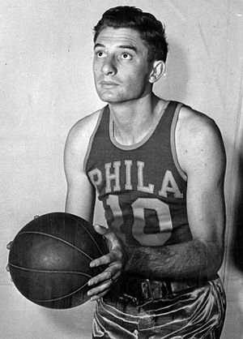

1946-1962
Early years
The Warriors were founded in 1946 as the Philadelphia Warriors, a charter member of the Basketball Association of America.
They were owned by Peter A. Tyrrell, who also owned the Philadelphia Rockets of the American Hockey League.
Led by early scoring sensation Joe Fulks, the team won the championship in the league's inaugural 1946–47 season by defeating the Chicago Stags, four games to one.
The NBA, which was created by a 1949 merger, officially recognizes that as its own first championship.
Gottlieb bought the team in 1951.

Joe Fulks